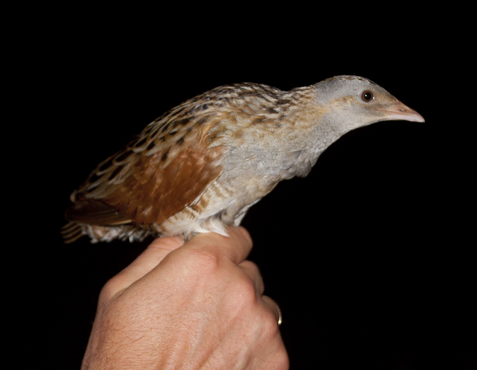

Grieze
Crex crex
Avots: Ivo Dinsbergs
Grieze ir neliels ganu dzimtas putns.Vaislas mitrās augsto zālāju pļavās,blīvi aizaugušos krūmu purvos, sētās aramzemēs un citās atklātās ainavās mērenajā Eirāzijas joslā. Vairāk nekā puse populācijas vairojas Krievijā. Gājputns, ziemo Āfrikā, galvenokārt kontinenta dienvidaustrumu daļas krūmu un zālaugu savannās.
Vidējais dzenis
Dendrocopos medius

Avots: Frank Vassen
Vidējā dzenis ir dendrokoptu ģints Eiropas dzenis. Vidējā dzenis ir 20–22 cm gara un ar apspalvojumu līdzīgs lielajam dzenim.
Zivju ērglis
Pandion haliaetus

Avots: Picasa
Zivjērglis ir diennakts plēsīgs putns, kas ēd zivis, un kura izplatības areāls ir globāls . Šis putns ir liels, tā garums pārsniedz 60 cm un spārnu plētums ir 180 cm. Atpazīstamā iezīme ir tāda, ka galvas aizmugure un aizmugure ir pelēkbrūnas, bet spārni un ap acīm ir melni.
Baltais stārķis
Ciconia ciconia

Avots: "Birds of Siberia"
Baltais stārķis ir liels putns stārķu dzimtā. Tā apspalvojums galvenokārt ir balts, uz putna spārniem ir melns. Baltais stārķis, kas ir plēsējs, ēd dažādus dzīvnieku upurus, tostarp kukaiņus, zivis, abiniekus, rāpuļus, mazus zīdītājus un mazus putnus.
Pelēkā dzilna
Picus canus

Avots: "Birds of Siberia"
Pelēkgalvas dzenis, pazīstams arī kā pelēkais dzenis, ir dzeņu dzimtas, Eirāzijas pārstāvis. Kopā ar biežāk sastopamo Eiropas zaļo dzilni un Ibērijas zaļo dzilni tā ir viena no trim Eiropā sastopamajām cieši radniecīgajām māsas sugām.
Lauka piekūns
Falco tinnunculus

Avots: "eBird"
Mazs piekūns ar raksturīgu tēviņu apspalvojumu: pelēka galva, sarūsējusi mugura, pelēka aste ar platu melnu galu. Mātīte augšpusē ir brūngana, ar spārniem mugurā, spārniem un asti. Ievērojiet diezgan smailus spārnu galus un izteiktu tumšu plankumu uz krūtīm.
Zivju dzenītis
Alcedo atthis

Avots: AE James
Zivju dzenītis ir mazs dzeloņzivju dzimtas putns, nedaudz lielāks par zvirbuli.Spārnu garums 7-8 cm, spārnu platums aptuveni 25 centimetri, svars 25-45 grami . Tam ir spilgts apspalvojums, spīdīgs no augšas, zilgani zaļš, ar maziem gaišiem plankumiem uz galvas un spārniem, rūsgani sarkans no apakšas, sloksne caur aci līdz pakauša daļai un kakls ir gaišs.
Laukirbe
Perdix perdix

Avots: "Observation.org"
Laukirbe ir nemigrējoši putni no Phasianidae dzimtas, kuru dzimtene ir Eiropa , Āzija , Āfrika un Tuvie Austrumi . Turklāt dažviet Amerikas Odontophoridae dzimtas sugas sauc par "irbēm" un dažas Tinamidae dzimtas sugas. Laukirbes ir vidēja auguma putni, kas ligzdo uz zemes un ēd sēklas. Dažas sugas ir atzītas gaļas dēļ, kurām ir augsta kulinārijas vērtība.
Lielā gaura
Mergus merganser

Avots: "Environment & Society Portal"
Lielā gaura ir liela upju un ezeru ērce Eiropas, Āzijas un Ziemeļamerikas mežu apvidos. Parastā zīle ēd galvenokārt zivis. Tas ligzdo koku bedrēs. Parasti turas pa pāriem vai nelielās grupās, bet dažkārt ziemošanas vietās veido lielus barus, kas sastāv no vairākiem tūkstošiem īpatņu. Lielākajā daļā apgabalu rets vai ļoti rets putns, tomēr kopējais populāciju skaits saglabājas stabils un ekologiem nerada bažas.
Peļu klijāns
Buteo buteo

Avots: "Wikipedia"
Peļu klijāns ir vidēji līdz liels plēsīgs putns, kura izplatības areāls ir liels. Tas ir Buteo ģints pārstāvis, Accipitridae dzimtas pārstāvis. Peļu klijāns ir oportūnistisks plēsējs, kas var uzņemt dažādus laupījumus, taču tas galvenokārt barojas ar maziem zīdītājiem , īpaši grauzējiem , piemēram, spieķiem.
Upes tilbīte
Actitis hypoleucos

Avots: "eBird"
Upes tilbīte ir neliels Palearktikas bridējputns. Tie ir parapatriski un ģeogrāfiski aizstāj viens otru; abu sugu klaiņojošie putni var apmesties pie otras sugas audzētājiem un hibridizēties.